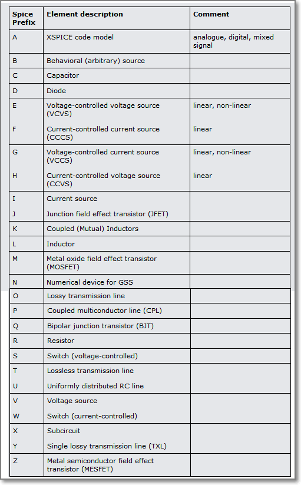

Schematic symbols: prefixes and pin numbers
Device and subcircuit (or hierarchical block) symbols created for use in schematics that are intended to be run as spice simulations, in addition to having a PCB Prefix that is used for the reference designator in the schematic, also have a Spice Prefix. They also have two sets of pin numbers: PCB pins and Spice pins.
PCB and Spice Prefix
The rules on the assignment of the PCB Prefix or reference designator of a schematic symbol are somewhat dependent on the EDA tool and on the user’s preferences. Depending on how a device is graphically represented by it’s schematic symbol it may have a different PCB Prefix or** reference designator**. For example, a single discrete MOSFET device may have a PCB Prefix of Q, M or perhaps TR, whereas if it is part of a monolithic multiple transistor array it may have a PCB Prefix of U or IC.
The rules on the assignment of the Spice Prefix of a schematic symbol are strict. This is because the Spice Prefix is used to tell the simulator which circuit element the symbol represents and therefore which simulation model it is to use.
Simulation models for most of the spice circuit elements are in the form of a single-line .model statement however some of them may be in the form of a multi-line .subckt subcircuit definition. For example, some MOSFETs may be described by a .model statement in which case their Spice Prefix is M but many MOSFETs are described by a .subckt and so their Spice Prefix is X.
Therefore, irrespective of the PCB Prefix chosen for a schematic symbol, the Spice Prefix for a schematic symbol representing a given circuit element must match the type of model required to simulate that instance of that circuit element in your schematic.
For example, if you have two different n-channel MOSFETs in a schematic; Q1, a BSS123 which is modelled by a .model statement:
BSS123*SRC=BSS123;DI_BSS123;MOSFETs N;Enh;100V 0.170A 1.00ohms Diodes Inc.
MOSFET
.MODEL DI_BSS123 NMOS( LEVEL=1 VTO=1.00 KP=6.37m GAMMA=1.24
+ PHI=.75 LAMBDA=625u RD=0.140 RS=0.140
+ IS=85.0f PB=0.800 MJ=0.460 CBD=19.8p
+ CBS=23.7p CGSO=36.0n CGDO=30.0n CGBO=124n )
* -- Assumes default L=100U W=100U --
and Q2, a BSS127S which is modelled by a .subckt:
BSS127S*---------- BSS127S Spice Model ----------
.SUBCKT BSS127S 10 20 30
* TERMINALS: D G S
M1 1 2 3 3 NMOS L = 1E-006 W = 1E-006
RD 10 1 84.22
RS 30 3 0.001
RG 20 2 29
CGS 2 3 1.958E-011
EGD 12 0 2 1 1
VFB 14 0 0
FFB 2 1 VFB 1
CGD 13 14 2E-011
R1 13 0 1
D1 12 13 DLIM
DDG 15 14 DCGD
R2 12 15 1
D2 15 0 DLIM
DSD 3 10 DSUB
.MODEL NMOS NMOS LEVEL = 3 VMAX = 8E+005 ETA = 1E-012 VTO = 3.419
+ TOX = 6E-008 NSUB = 1E+016 KP = 0.127 U0 = 400 KAPPA = 1.044E-015
.MODEL DCGD D CJO = 1.135E-011 VJ = 0.9232 M = 0.9816
.MODEL DSUB D IS = 2.294E-010 N = 1.601 RS = 0.1079 BV = 65
+ CJO = 1.956E-011 VJ = 1.514 M = 0.8171
.MODEL DLIM D IS = 0.0001
.ENDS
*Diodes BSS127S Spice Model v1.0 Last Revised 2012/6/6
then even though both have the same PCB Prefix of Q: Q1 must have a Spice Prefix of M and Q2 must have a Spice Prefix of X.
A list of Spice Prefixes and their associated circuit elements is given in the table below. 
For more information on circuit elements in Ngspice, please refer to:
http://ngspice.sourceforge.net/docs/ngspice-manual.pdf#subsection.2.1.2
PCB and Spice pin numbers
The two sets of pin numbers are:
-
PCB pin number: these are the numbers for the real, physical device pins in its package. They are required so that the pins of a device symbol in a schematic can be mapped onto the physical pins of a PCB footprint. In other words, so that the connections shown in the schematic, end up connected properly by copper on the PCB.
-
Spice pin number or pin order: these are the numbers that map the pins on the symbol to their respective functions in the spice model or subcircuit.
Actually the spice pin ordering has a slightly deeper meaning.
Spice has no concept of component symbols: they are a construct of the schematic editor.
When a spice netlist is generated, the symbol in the schematic editor is either - in the case of model defined devices such as resistors, capacitors, inductors, diodes, transistors and sources - mapped directly to the relevant models (defined by the device prefix such as R, C, L, D, Q and so on), or in the case of a subcircuit, converted into a subcircuit call statement.
The spice pin ordering for the majority of built-in models such as resistors, capacitors, inductors, diodes, transistors and sources are defined and generally taken care of by the schematic editor, more care has to be taken with the spice pin ordering of subcircuits.
This can be illustrated by a simple opamp with 5 pins: inverting and non-inverting inputs; output and positive and negative supply pins but the principle applies to all spice subcircuits.
The subcircuit call for this opamp might look like this in the spice netlist:
X1 input feedback vpos vneg output opamp_ANF01
where:
X1 is the name of the subcircuit in the top level (i.e. the calling) circuit;
input feedback vpos vneg output are the netnames in the circuit calling (i.e. containing) the subcircuit and
opamp_ANF01 is the name of the subcircuit being called.
Pay special attention to the order of the netnames in the subcircuit call.
The spice pin ordering for the majority of opamp subcircuits is like that shown
in the example below:
*-------------------------------------------------------------------
*
* opamp_ANF01
*
* Simplified behavioural opamp
*
* Node assignments
* noninverting input
* | inverting input
* | | positive supply
* | | | negative supply
* | | | | output
* | | | | |
* spice pin order: 1 2 3 4 5
* | | | | |
.subckt opamp_ANF01 inp inn vcc vee out ; these are the netnames
* used internally to the
* subcircuit.
B1 out 0
+ V=(TANH((V(inp)-V(inn))*{Avol}*2/(V(vcc)-V(vee)))*(V(vcc)-V(vee))
+ +(V(vcc)+V(vee)))/2
*
.ends opamp_ANF01
*
Note that the spice pin order of the subcircuit call is in exactly the same order as that of the subcircuit.
Although the physical pin numbering of any device is critical for successfully mapping the pins on a schematic symbol onto a physical package footprint when laying out the PCB, because spice only knows about single devices and does not care about how they are physically packaged, each instance of any device in a spice schematic has to be mapped onto its own copy of the spice model or subcircuit, irrespective of where it is in any physical package.
Therefore, for the physical, package pin numbering of the four opamps in a quad opamp in say, a SOIC14 or a DIP14 package, as shown below, to work with the example subcircuit above, the spice pin ordering would be:
Opamp A pin number spice pin order
OUT 1 5
IN- 2 2
IN+ 3 1
V+ 4 3
V- 11 4
Opamp B pin number spice pin order
OUT 7 5
IN- 6 2
IN+ 5 1
V+ 4 3
V- 11 4
Opamp C pin number spice pin order
OUT 8 5
IN- 9 2
IN+ 10 1
V+ 4 3
V- 11 4
Opamp D pin number spice pin order
OUT 14 5
IN- 13 2
IN+ 12 1
V+ 4 3
V- 11 4
The physical package pin numbering reflects that of each opamp in the package.
The spice pin ordering is the same for each instance of the individual opamps.
Of course there is only one physical instance of each supply pin on the schematic symbol for the quad opamp in this example but each spice subcircuit must have the supply pins explicitly defined.
Exactly how this is handled is at the schematic symbol level depends on how the schematic capture package handles symbols for multiple devices with shared supply pins but the generation of a spice netlist from the schematic will always generate the complete set of pins required in the subcircuit calls.
In cases where the subcircuit is built by the user as opposed to where it is supplied by a vendor for a particular device, exactly the same rules apply except that it is up to the user to specify the subcircuit pin order and to construct the symbol appropriately.
Although as described earlier, built in spice models usually have defined spice pin orders, not all subcircuits have the same spice pin numbering. Therefore if your spice circuit throws errors - especially if there are warnings about pin numbers or pin names - it is worth remembering to check that the pin order of the symbol that is netlisted to form the calling statement matches that of the subcircuit that is being called!
[8] In Debian based distributions gerbv is listed under Electronics in the package management system. The version in the repositories may be an earlier version but some users may find it easier to install than the sourceforge archive.
[9] As is the opamp_ANF01 example above